Splitting in the terminal wizard
Run chela with no arguments and it starts an interactive wizard that
walks you through a split one prompt at a time - the same engine as the
command line, but guided. It is the easiest way to
split if you would rather answer questions than remember flags. This page covers
splitting; to put the secret back together, see
recovery in the terminal wizard.
1. Pick what to do
The wizard opens on a menu: split a new secret, or recover one. Choose to split.
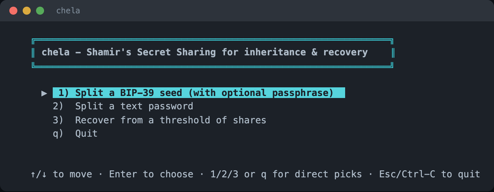
2. Enter the secret
For a text password, type it in directly. The wizard masks nothing it does not have to and validates as you go.
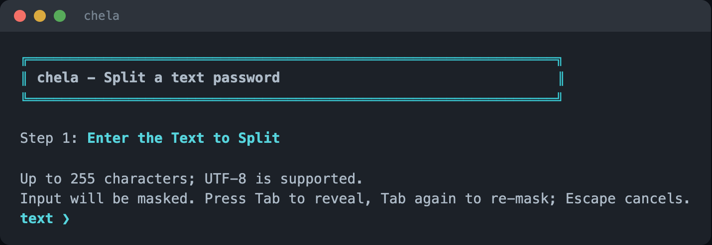
Splitting a wallet seed instead? Choose the seed option and type the mnemonic; the wizard checks it against the BIP-39 wordlist and its checksum, then asks for an optional passphrase.
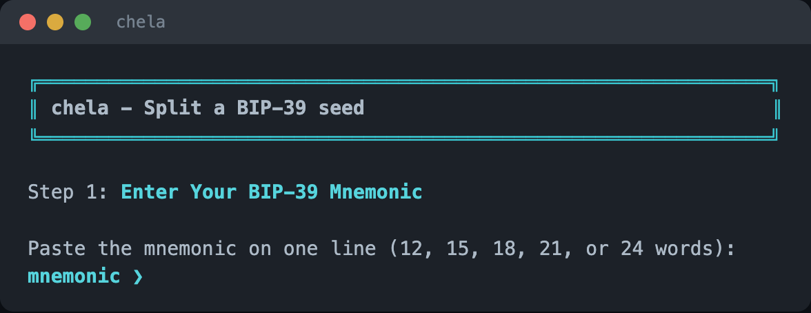
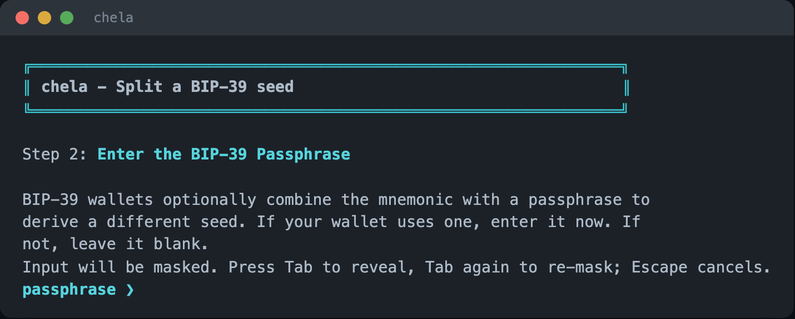
3. Name the backup
Give the set a short name. It prints at the top of each share so a holder knows what the words are for.
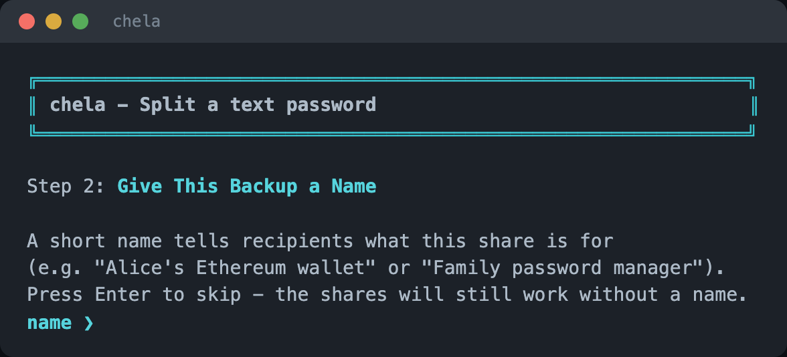
4. Set the recovery rule
Choose the M-of-N rule: how many shares to make, and how many it takes to recover. The wizard explains the common choices so you do not have to know the jargon up front.
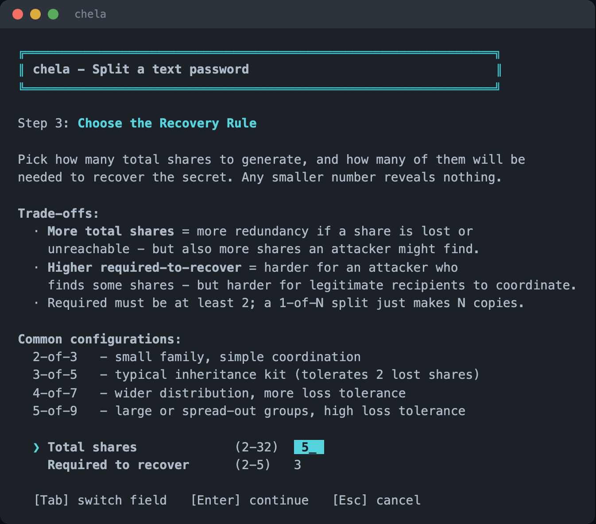
5. Holders and a note
Optionally name who holds each share, and add a free-form note. As on the website, naming holders is a trade-off: it makes distribution clearer but prints the roster on every share, so the wizard asks rather than assuming.
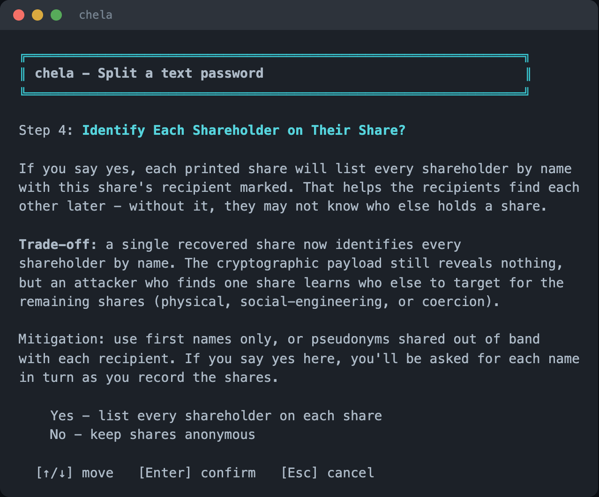
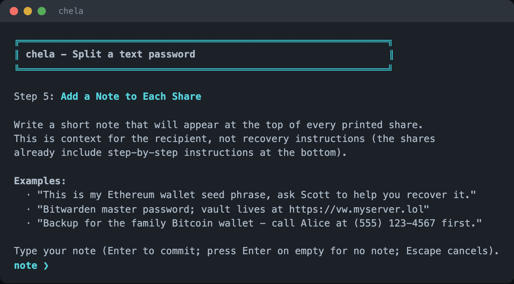
6. Confirm
The wizard summarizes the split - the rule, the name, the holders - before generating anything. Confirm to proceed.
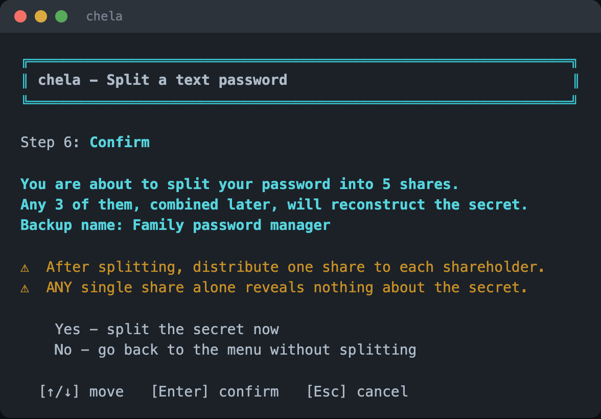
7. Record each share
The wizard then shows the shares one at a time and waits while you write each one down or print it - "Record share 1 of N," then the next - so you cannot accidentally skip one. Each share is a header line and its words.
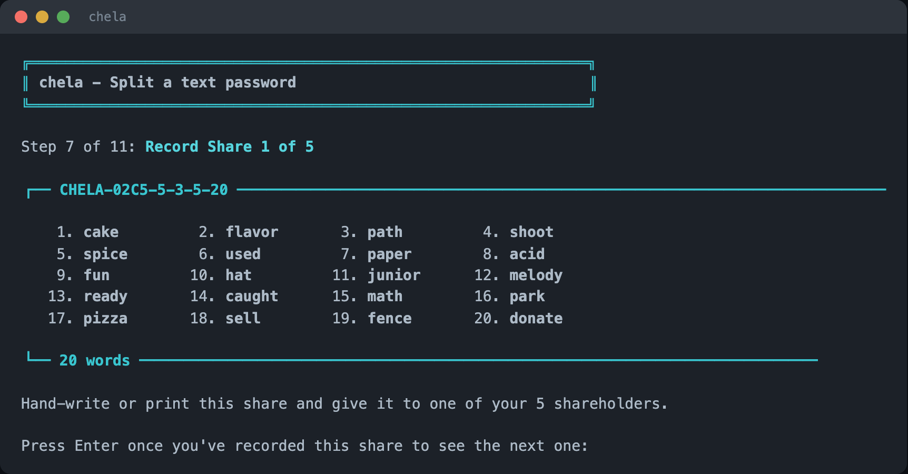
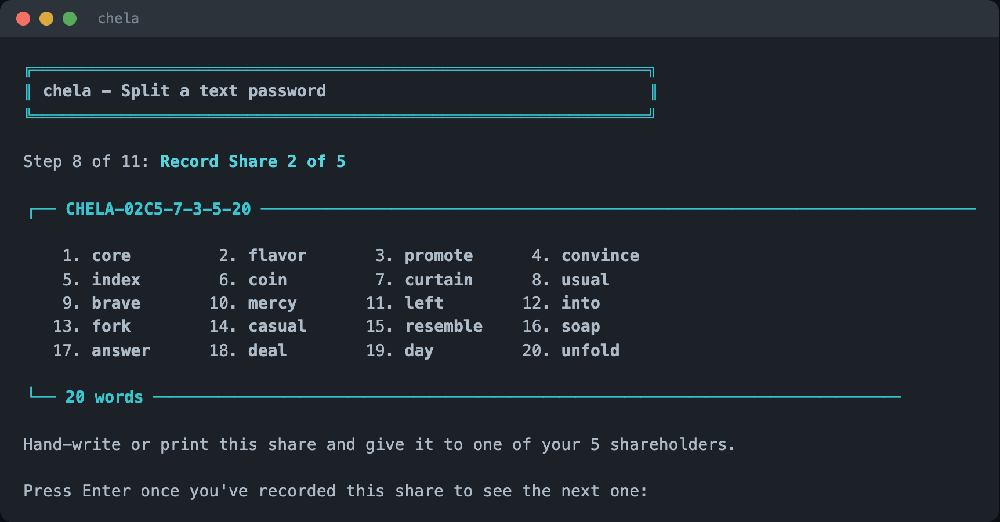
Next steps
Hand out the shares. When you need the secret again, see recovery in the terminal wizard. The same split is available on the website and the command line, and the words are explained in the share format.